Hi, I'm
Ethan Martín
Hello there! I am Ethan Martín and I'm a 22 year old video game developer from Barcelona, with a passion for everything surrounding this medium. I have a special love for game AI and procedural generation, and I am always willing to learn more!
Download CV
Experience
QA Internship
Product Tester
Jul - Aug 2022 / Jul - Aug 2023
UNIDESA
Education
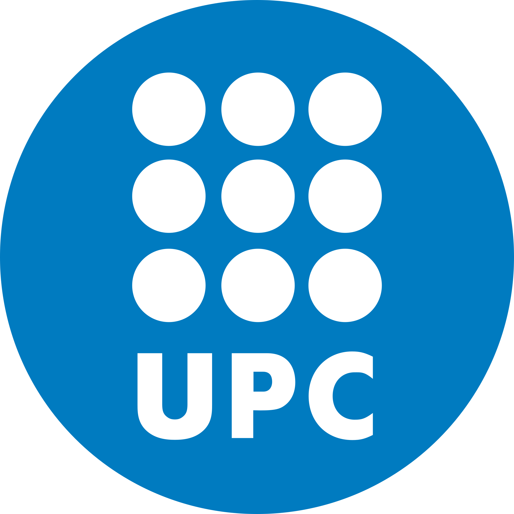
Videogames Design and Development
Bachelor's Degree (English)
September 2021 - July 2025
CITM - UPC
CUPRA Gamified Car
Creation Lab in collaboration with CUPRA
2023
CITM - UPC
Composition of Real and Virtual Images
Learning program
2019
CITM - UPC
Creation of an Augmnted Reality App
Learning program
2019
CITM - UPC
Currently Working On...
Uncharted 4 Enemy AI Recreation
Project Description
After watching the 2017 GDC conferene Authored vs. Systemic: Finding a Balance for Combat AI in Uncharted 4, I decided to recreate the system in Unreal Engine to sharpen my skills with the engine and challenge myself to see if I would be able to recreate a system designed for a AAA game in a small prototype demo.
Tech used
Unreal Engine 5, C++
Role Description
I wanted to go the C++ route mainly to understand the inner workings of Unreal and to focus on optimization, given my interest in the topic. I also wanted to see how much I could simplify the work in the editor, to make that part of the process as intuitive as possible.

Stay tuned for updates on the project.
Projects
Alien: Nemesis
Project Description
Alien: Nemesis is one of the biggest projects I've worked on so far. It is a horror top-down shooter game based in the popular "Alien" franchise which was developed using our own game engine made from scratch, TheOneEngine.
Tech used
TheOneEngine, C++, C#, OpenGL, Mono, ImGUI, Wwise, ImGuizmo, Assimp, DevIL, GLEW, GLM
Role Description
During most of the development process, I was in charge of the development and maintainance of the Scripting Engine, both embedding the Mono library into the project and designing the whole scripting infrastructure, while also adding features to it as new needs arose.
In terms of the game, I was in charge of a rework for the entire behaviour of the Alien Queen, the final boss. I also coded the core behaviour for two of the enemies in the game.
Some of the Queen's attack patterns
Check out the official page here
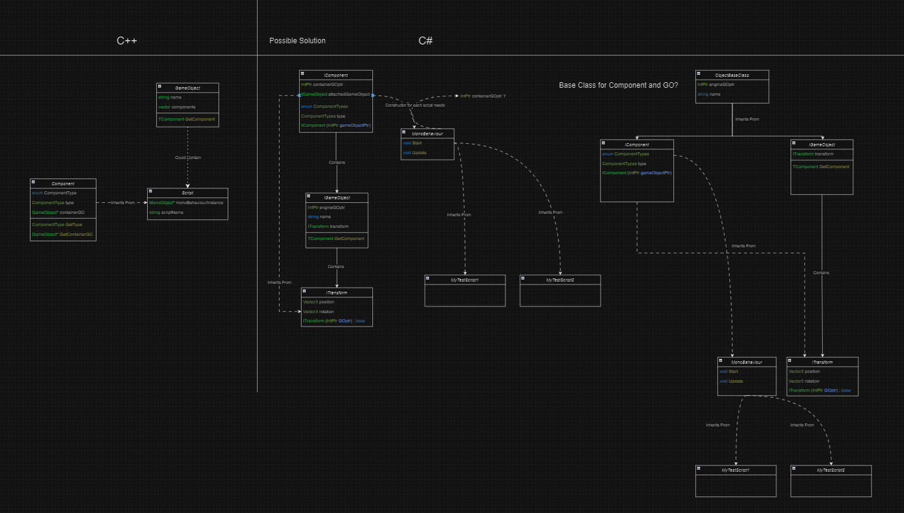
Diagram of the design of the scripting system
Adaptation of Cyclic Level Generation to 3D Environments (Final Degree Project)
Project Description
My Final Degree Project, named "Adaptation of Cyclic Level Generation to 3D Environments" was made as a part of the prototype for a third-person PvE shooter game called "Lights Out", made in collaboration with Jonathan Cacay Llanes. Following the steps of Dr. Joris Dormans and the Ludomotion team to create Unexplored, I adapted their level generation approach to allow for 3D generation.
Tech used
Unity, C#, Netcode for GameObjects
Role Description
For this project, I used transformational grammars to create the rules for the algorithm, I applied them as graph grammars to make the layout of the level, and later built the physical 3D representation of the resulting level graph. To make the development process easier and the algorithm expandable, I also implemented a graph / rule creation pipeline to streamline the process.
Primal Cycle
Project Description
Primal Cycle is a two-stick rogue-like shooter, developed for the GMTK Game Jam 2025. This year's theme was 'Loop', so you will find yourself having to level up your character while traversing a looping dungeon which increases in difficulty with each iteration, until you feel prepared enough to take on the final boss in the center of the map.
Tech used
Unity, C#
Role Description
During this Jam I implemented the behaviour of most of the enemies, as well as taking care of the final boss battle and the behaviour of the boss itself.
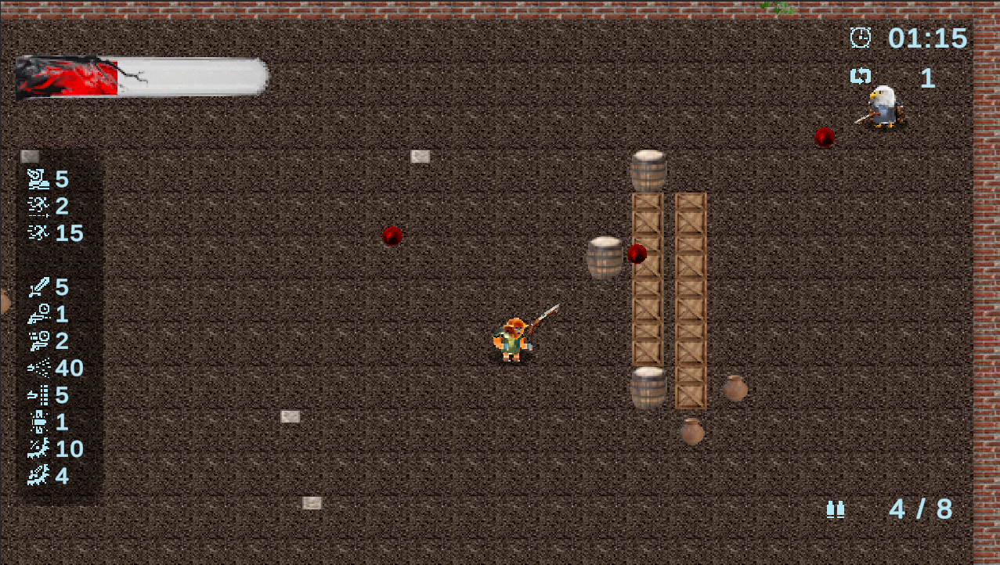
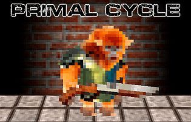
This project was submitted as part of the GMTK Game Jam 2025
Check the game out on itch.io
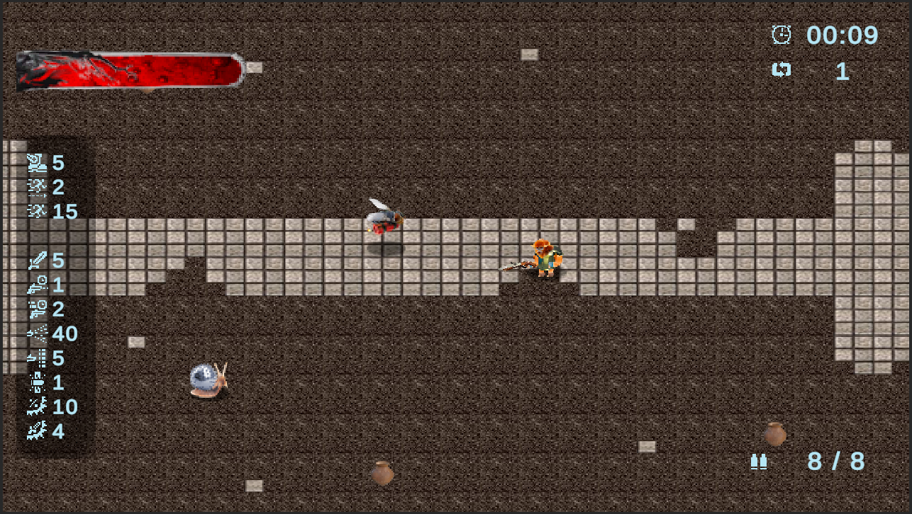
Jailed VR
Project Description
Jailed VR is a VR escape room horror experience where you will have to solve puzzles in order to get the keys to ecape. It was made as a final project for our VR subject, but then polished and launched on itch.io. Test your wit while trying not to succumb to the unsettling sounds and creepy atmosphere of the place you have been Jailed in.
Tech used
Unity, XR Toolkit, C#
Role Description
In this project I was in charge of one of the three main lines of puzzles, which featured a scale, a pulsating heart and a cryptex (lock).
Check the game out on itch.io
Kingdom Engine
Project Description
Kingdom is a 3D engine made from scratch, featuring a scripting module through the embedding of the Mono library.
Tech used
C++, C#, Mono, OpenGL, SDL2, GLEW, ImGUI, DevIL, assimp, jsoncpp, nlohmann-json
Role Description
In this project I was the main responsible of the embedding of Mono and doing the base script structure, the "Transform" component, implementing mouse picking and raycasting, bounding boxes for the objects, primitives, the camera and helping troubleshoot problems with pointers and other technical difficulties.
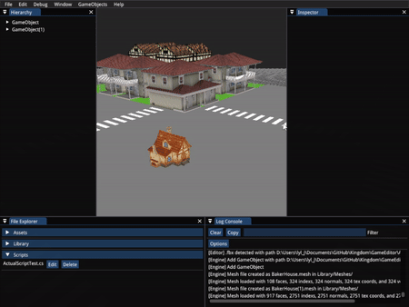
Find the project on our GitHub
The Fixer
Project Description
The Fixer was our submission to the 2025 CITM Game Jam, under the theme "Trial and error".
In the game, you are a repairman whose job is to figure out repairs on the go. You will have
to find the right pieces in your back shop to repair the items the clients bring you, but they
have limited patence, so you must hurry up!
At the end of the Jam, the game received an Honorable Mention for Best Technology.
Tech used
Unity, C#
Role Description
In this project, I programmed the modular repair component system, and I did the part of the workbench interaction related to said system. I also contributed to the general interaction with all the other objects, teaming up with some of my colleagues to do so.
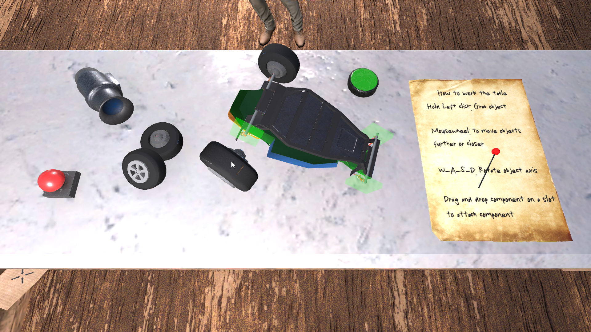
The Workbench
This project was submitted as part of the 8a Gran CITM Game Jam
Check the game out on itch.io
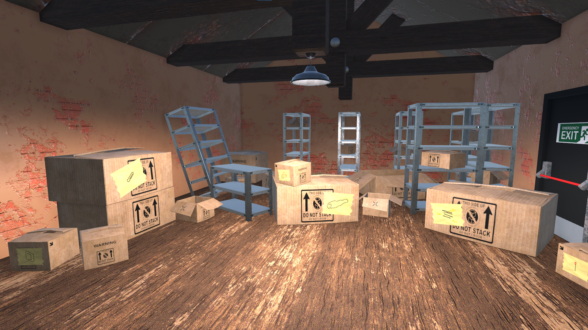
The Back Shop
Super Metal Boy
Project Description
Super Metal Boy is a precision platformer inspired by Super Meat Boy. In this game you'll find yourself wall-jumping, dashing and avoiding enemies in order to complete the levels before the time runs out.
Tech used
C++, Box2D, SDL2, Tiled, pugiXML and Optick
Role Description
In this project I was in charge of parsing and loading the levels, coding the wall jump and character animations, enemy AI and pathfinding as well as designing the level layouts and posing the character animation frames.
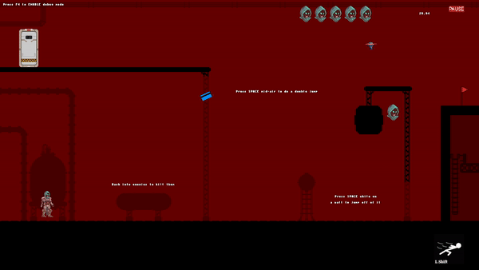
Check the game out on itch.io
No Time to Di(c)e
No Time to Di(c)e was our first self-organized project, submitted as part of the GMTK Game Jam 2022, with the theme "Roll of the Dice". A run and gun game where you control a fed-up die in a quest for vengeance.
Tech used
C++, SDL2
Role Description
In this project I was in charge of the enemy AI, attacks and programming their animations. I also programmed the final boss.

Lost in Dreams
Project Description
Lost in Dreams was created during the 2024 CITM Game Jam, with the theme "Dreams and Nightmares". In this game you'll find yourself travelling through worlds to advance in the levels in order to escape the realms of sleep.
Tech used
Unity, C#
Role Description
My main role in this project was designing and implementing the system to be able to change from one world to another, but I also coded the enemy behaviours, the small dialogue system and was in charge of scene managemnt.
This project was submitted as part of the 7a Gran CITM Game Jam
Check the game out on itch.io
Guerrilla War Tribute
This game was our first project, and it is a tribute to the arcade game Guerrilla War. You will be able to play the first level of the game and experience some adapted features.
Tech used
C++, SDL2
Role Description
For this project I coded most of the enemies AI and animations, camera behaviour and the core of the debug module while I also did the controller implementation (not the mapping).
Find the project on our GitHub
Pokémon Pinball
This project was a tribute made with educational purposes. Featuring various of the original features of the level, you can play for a while and try to beat your best score!
Tech used
C++, Box2D and SDL2
Role Description
For this project I made the debug module, coded the physics of the launcher spring and helped tweaking the flippers.
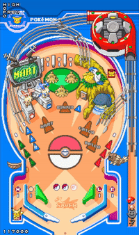
Find the project on our GitHub
Skills
Code
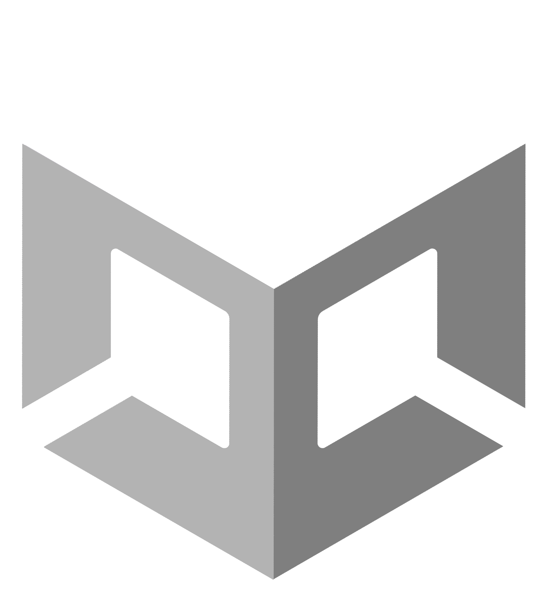
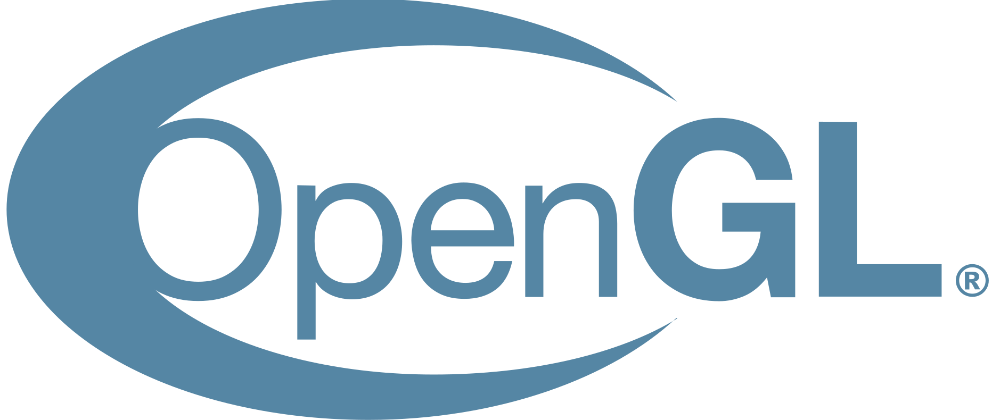
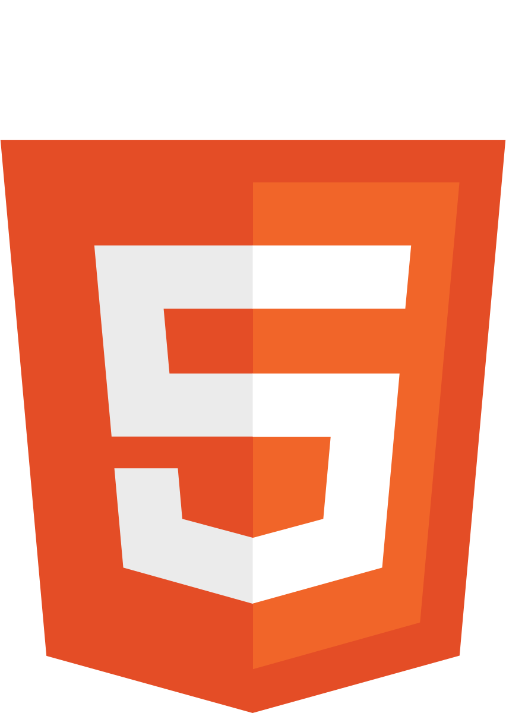
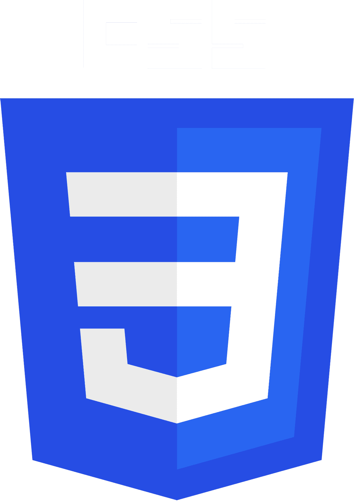
Software
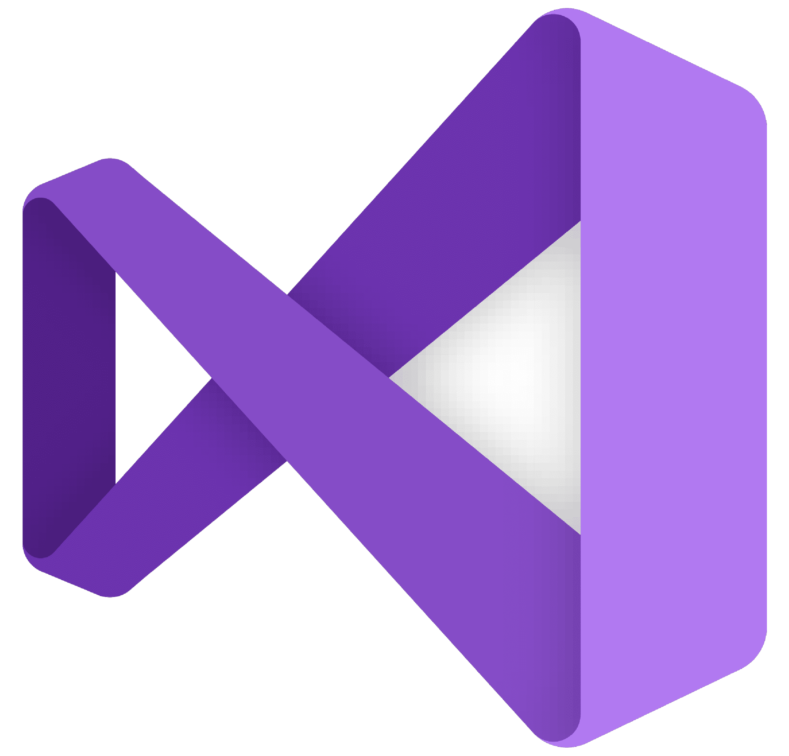
Project Managemnt
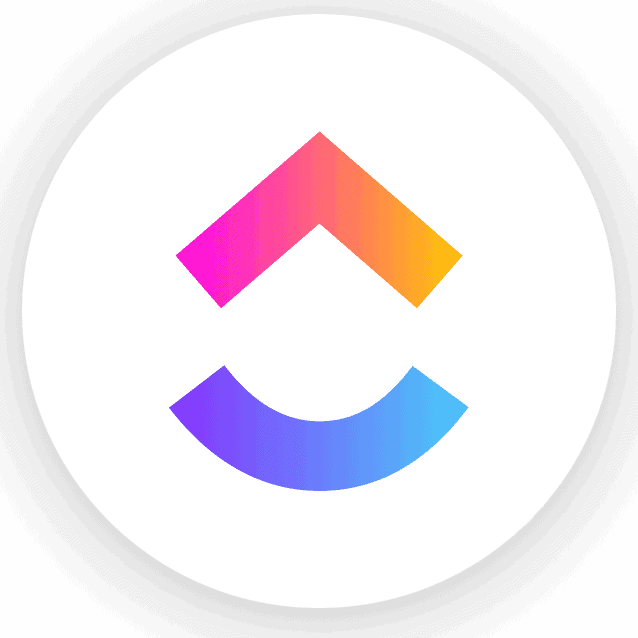
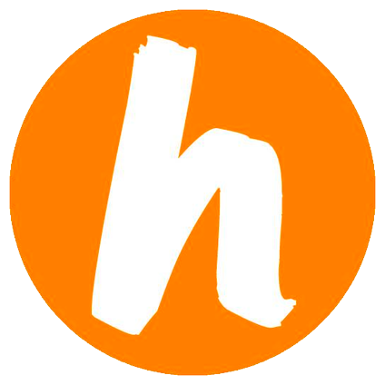
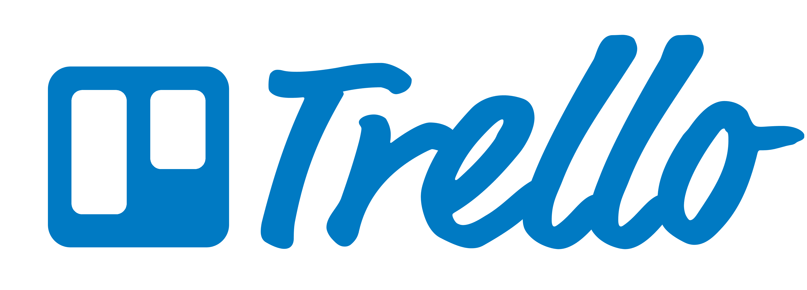
Art
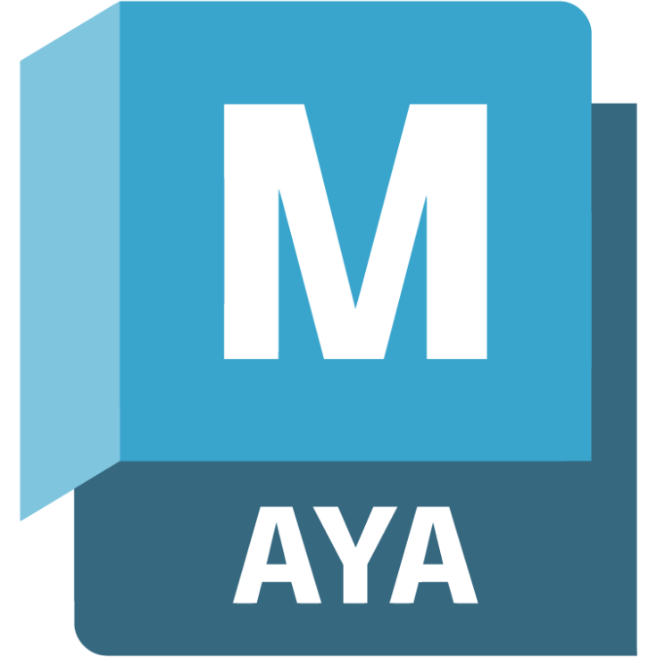
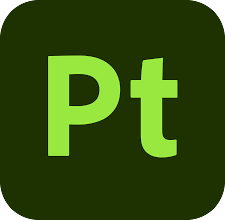
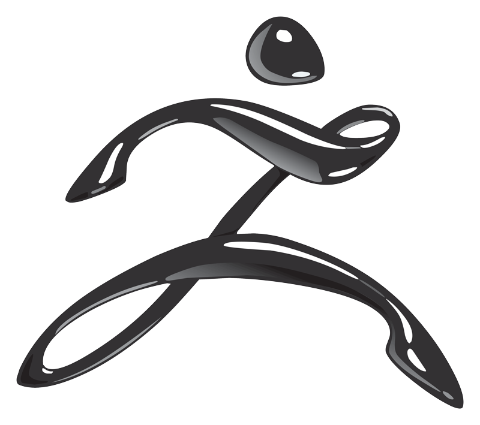